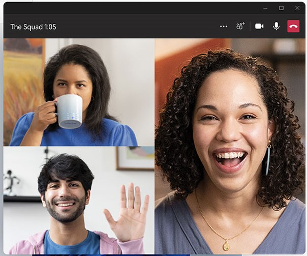
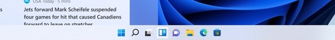
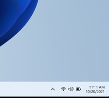
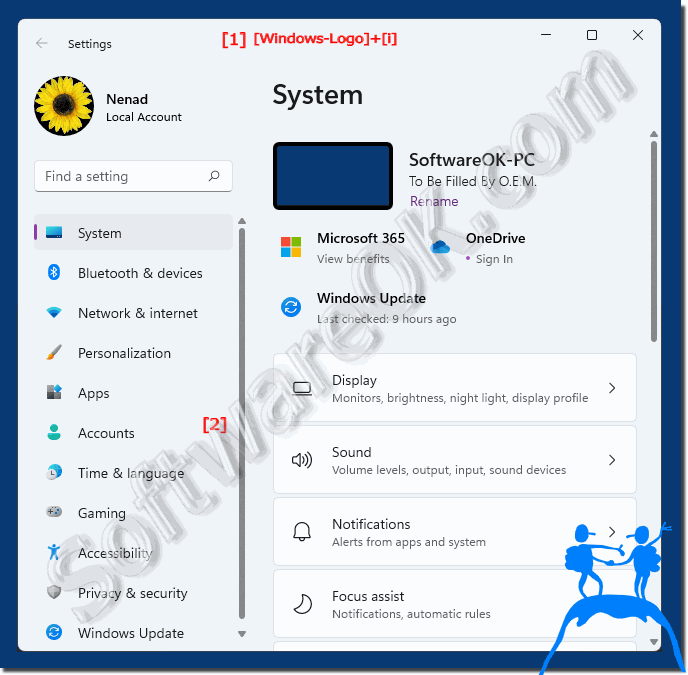
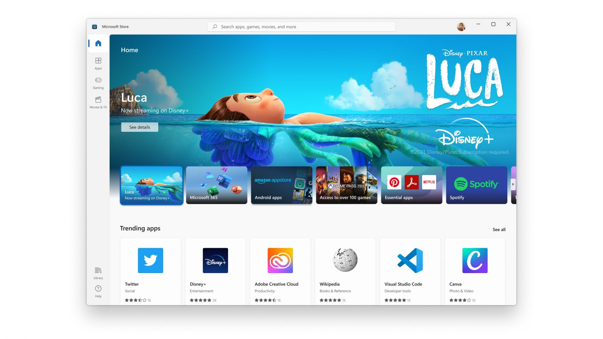
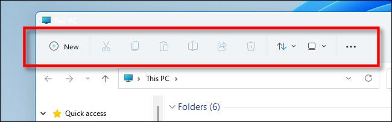
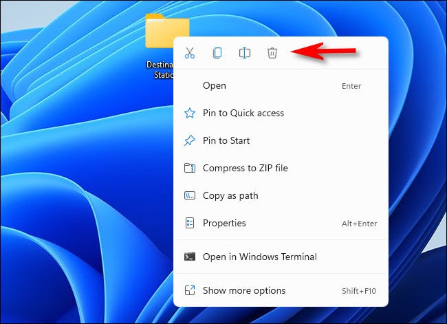
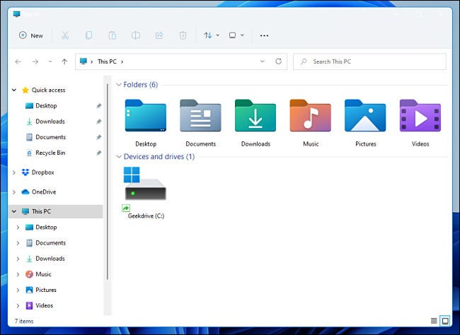
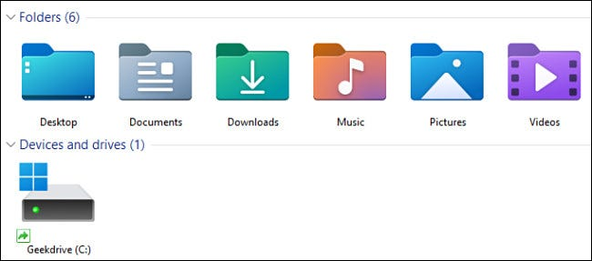

The New
A Fresh Look ✨
Rounded Corners
EVERYWHERE, but here is one example:

Centered Taskbar
This is optional and if you prefer the left cornered view you can
change it

Combined Menus
The menus are combined and are easier to access now!

New Settings
The new settings is now easier to navigate!

This is just the tip of the iceberg in new looks! There is much more
to discover and see when you try Windows 11 hands on!
Redesigned Microsoft Store
The Microsoft Store has completely been revamped and built from the
ground up. They did a huge redesign from scratch!

This is not the only thing new about the Microsoft Store - you can now
run Android Apps on Windows 11 from the Windows Store! This unlocks
new capabilities for your Windows machine.
NEW FILE EXPLORER
This might be the most exciting announcement for most of our users,
but we have a new file explorer now! We heard your complaints,
and fixed the file explorer so that it fits better to
your tastes. The toolbar is now more simplified:

There is also a more smaller right click menu now:

Finally, here is the complete File Explorer now:

And Lots More!
There are many more things that are new that have came to Windows 11!
Here is a rundown of a few more big ones:
-
Widgets: Widgets have came back to Windows 11! They are now AI
personalized, and have more options. You can see recent pictures,
your favorite sports scores, interesting news, and much much
more...I can't wait for you to try it!
-
Microsoft Teams Integration: Microsoft teams for personal released
and so we are now integrating it into Windows 11! You can now easily
start a new meeting, see your most recent chats, and dial someone up
with two taps. This will help you connect better than ever ;)
-
Better Multiple Desktops: We have upgraded our multiple desktops
feature by making it more customizable. The multiple desktops are
now easier to access and you can also choose a custom background for
every desktop. You can have a desktop for gaming, one for studying,
one for coding, the list goes on and on...
-
New Icons: We have updated our app icons and folder icons to look
more modern - we hope you like it :D
